5,0 no Google · 254 avaliações · 453 barbeiros formados
Lá em cima, é mão na máquina.
Sobe a escada da Brás de Pina, 714. Turma de manhã, de tarde e de noite, numa sala nova, com modelo de verdade na cadeira.
A primeira passada é tua.
Com o instrutor do lado, corrigindo o movimento. "Três aulas e eu já estava cortando sozinho", escreveu um aluno em setembro de 2025.
Quatro meses depois, o degradê é teu.
E o certificado da Fábrica também.
00,5 mm
13 mm
26 mm
39 mm
412 mm
Role
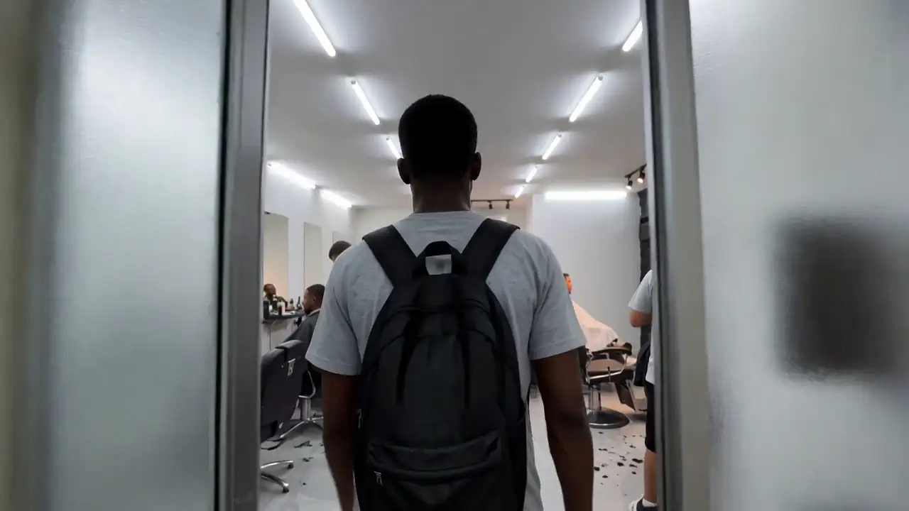
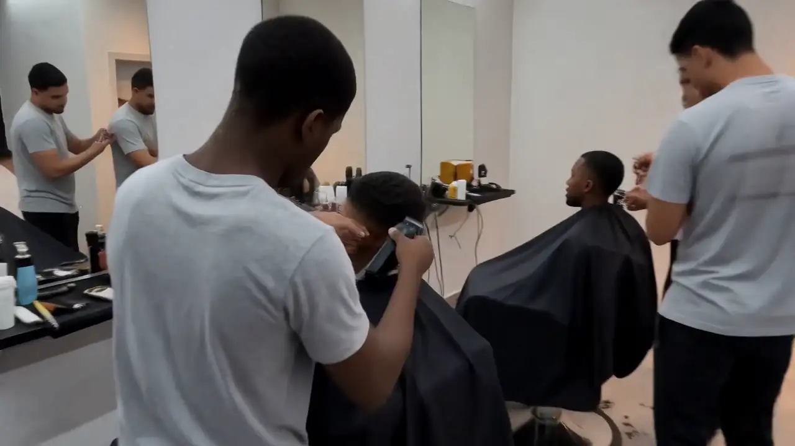
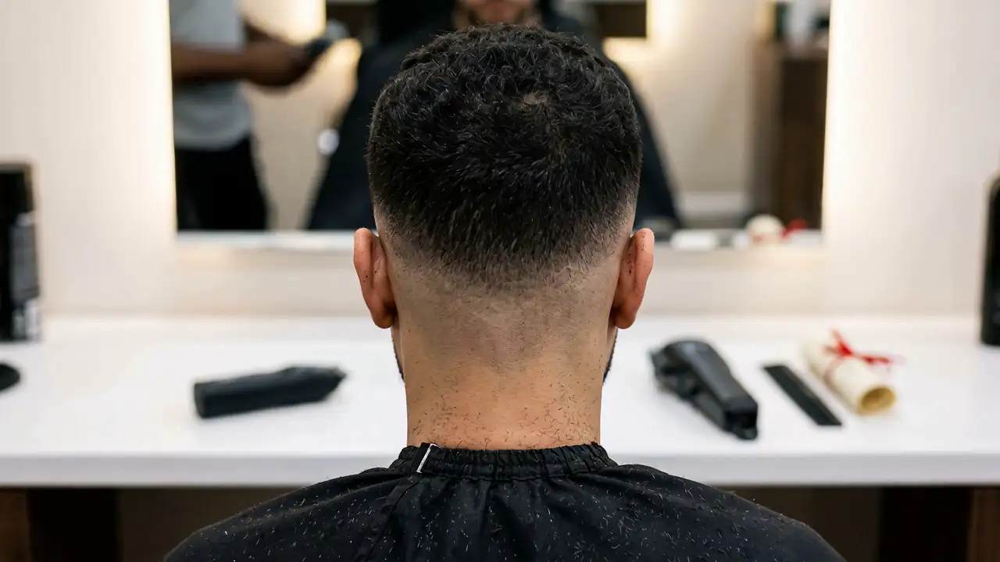
pente 1 · 3 mm
Sem manequim. Gente de verdade na cadeira.
Tudo aqui foi gravado na Fábrica, pelos alunos e instrutores, e está no Instagram da escola.
A turma em ação20/08/2026
Primeira aula do Ivan14/08/2026
Degradê feito por aluno24/03/2025
Técnica na tesoura07/10/2025
Do fade à cor29/06/2024
Formatura21/07/2025
pente 2 · 6 mm
Escolhe por onde começar.
Preço e turma a gente passa na conversa, com as condições do mês e parcelamento.
0
Barbeiro do zero
Pra quem nunca pegou numa máquina. Formação completa, do primeiro corte ao acabamento na régua.
4 meses
Turmas de manhã, de tarde e de noite
Modelo de verdade desde a primeira semana
Certificado da Fábrica
Máquina, tesoura e navalha · degradê · barba · acabamento · atendimento e primeiros clientes
2
Aperfeiçoamento
Pra quem já corta e quer subir de nível. O Perfect Work, com o Jullio e os instrutores da casa.
Tesoura
Degradê em 3 tons
Pigmentação
Platinado
Colorimetria
Quem já tem prática e quer certificado sai daqui com os dois
4
Workshops e imersões
Um dia inteiro numa técnica só. Já teve Tesoura do Zero, Imersão do Fade, colorimetria e print hair.
Prática do começo ao fim
Coffee break
Certificado
Networking
As datas saem no Instagram e chegam primeiro pra quem conversa com a gente
pente 3 · 9 mm
Escreve teu nome. É esse papel que você leva pra casa.
A Fábrica já formou 453 barbeiros. O próximo certificado sai com o número 454.
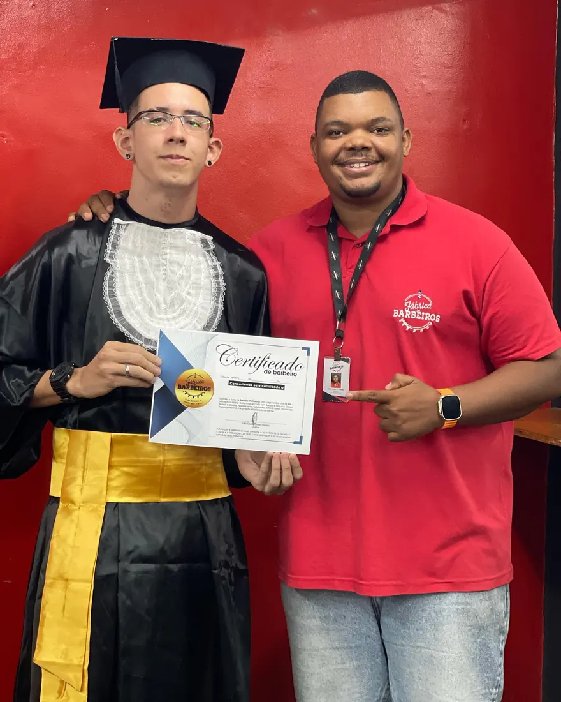
Formatura de maio de 2023. Esse é de verdade.
Nº 0454
Certificado
de formação de barbeiro
Certificamos que
Seu nome aqui
concluiu a Formação de Barbeiro da Fábrica de Barbeiros, com aulas práticas em modelo real, na Penha, Rio de Janeiro.
Mão na máquina
Primeiro degradê
Navalha e acabamento
Atendimento
Jullio Cezarfundador e diretor
Certificado ilustrativo de curso livre, emitido pela Fábrica de Barbeiros.
Quem te ensina começou do lado de fora também.
Jullio Cezar é cria do Dourado, em Brás de Pina. Começou a cortar em 2003, com a máquina que a mãe, Dona Denize, comprou pra ele ter uma profissão.
2003A primeira máquina, em casa, cortando amigo e parente.
JotapêA barbearia dele em Brás de Pina, que segue aberta. Jotapê também é como a equipe chama ele.
Fim de 2016A Fábrica nasce dentro da Jotapê, com dois alunos. Os dois viraram instrutores.
2021Turma nº 40 formada. No Meia Hora, a manchete "A favela venceu" chama ele de barbeiro queridinho dos famosos.
Hoje453 formados, sala nova, e ação social no Sereno, no Quitungo, no Antares e no Leme.
O grande desafio é se manter em alto nível.
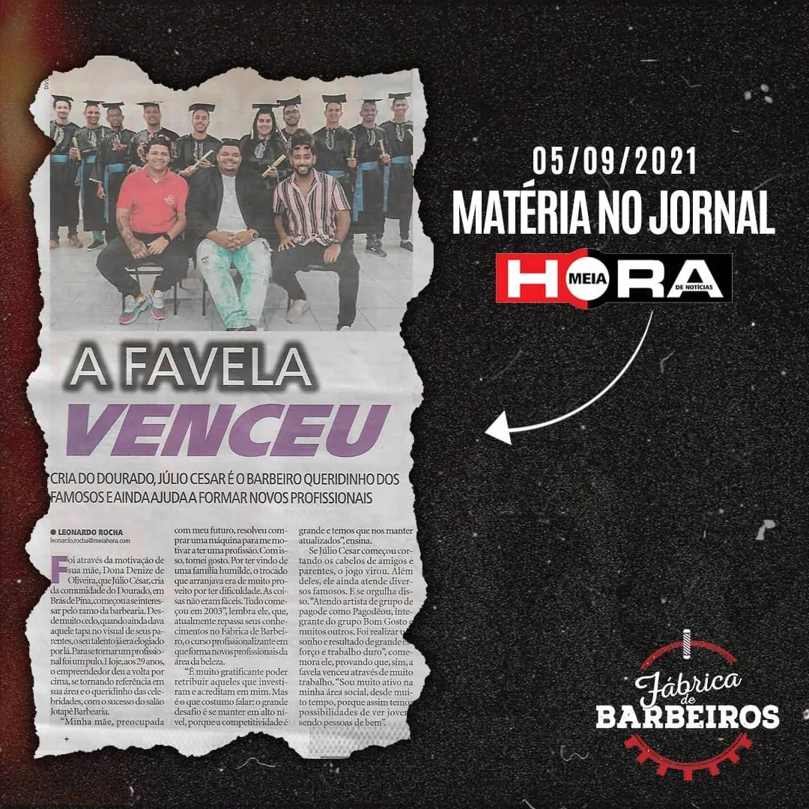
Meia Hora, 05/09/2021
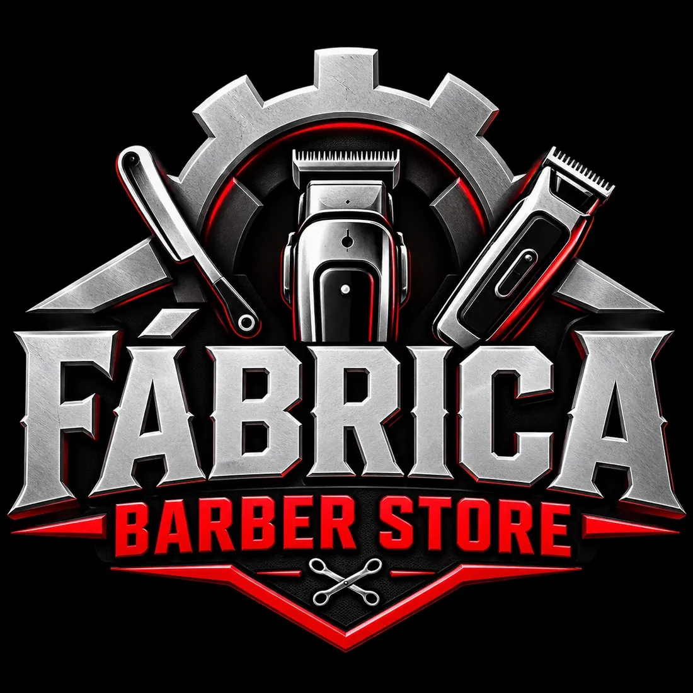
Fábrica Barber Store
A loja oficial da Fábrica. Tem aluno que sai do primeiro dia de curso com o kit completo, e quem já é barbeiro encontra a máquina certa. Envia pra todo o Brasil.
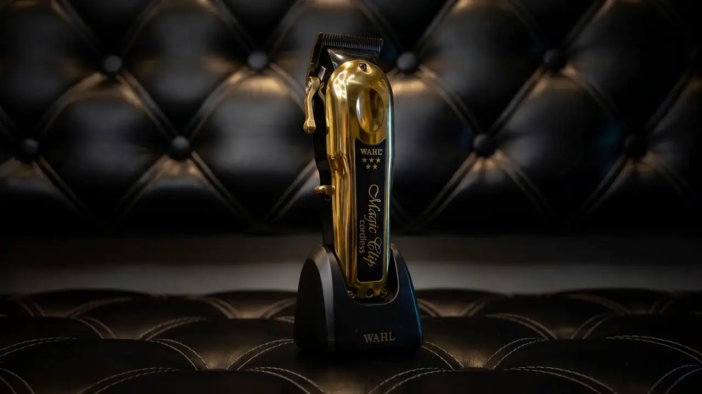
Wahl Magic Clip Gold
O ouro do fade.
Lâmina Stagger-Tooth com tecnologia Crunch Blade
Motor rotativo de alta performance
Até 100 minutos de bateria
8 pentes premium
Com ou sem fio
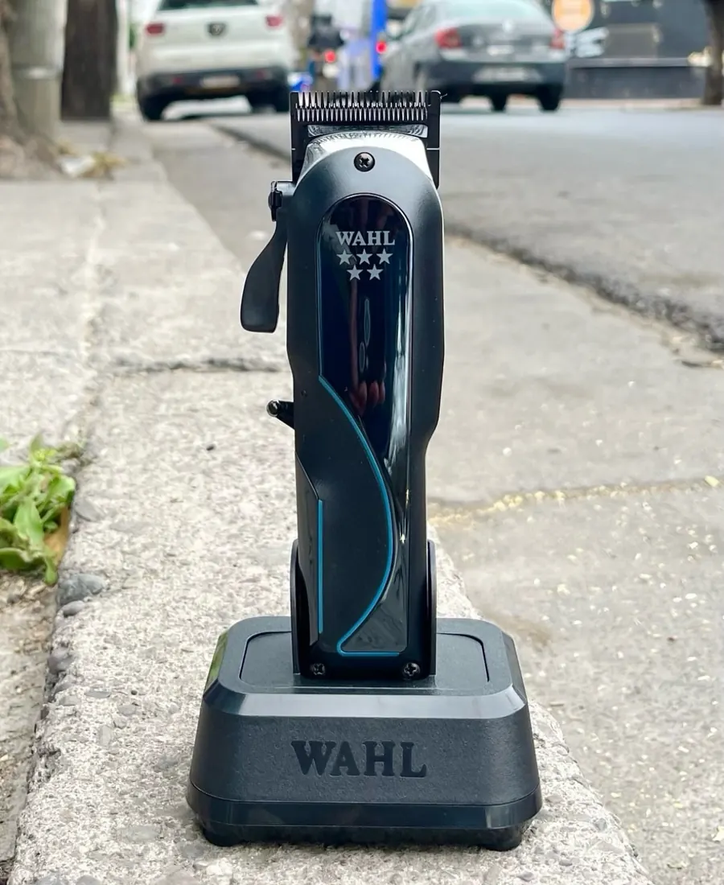
Wahl Senior 2.0
Motor brushless de 8.000 RPM, Adaptive Speed Control e até 150 minutos de bateria.
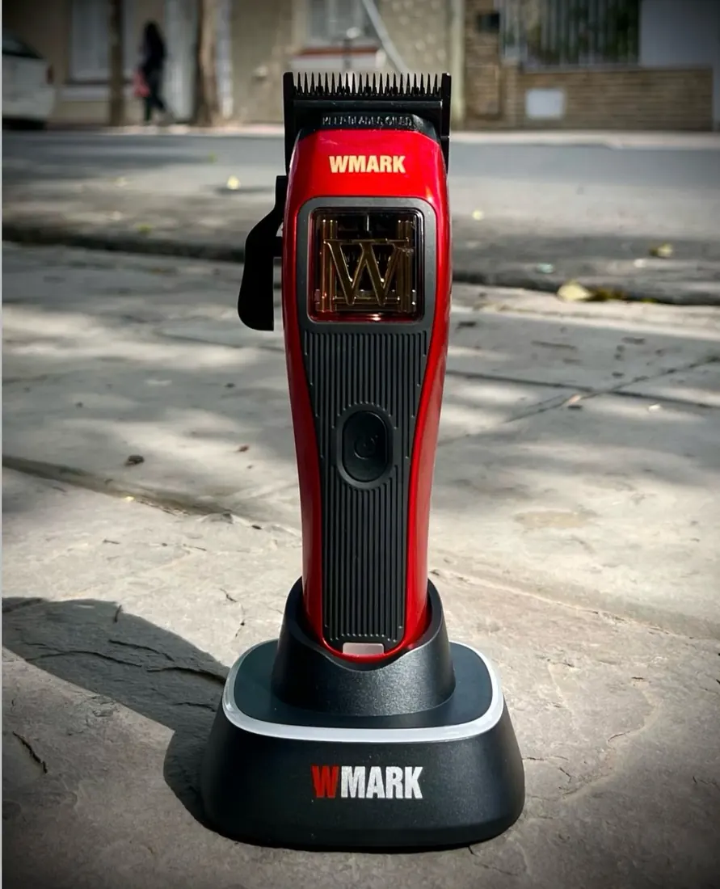
Wmark NG X1
Motor magnético de até 10.000 RPM, lâmina fade em DLC e cerca de 150 minutos de uso.
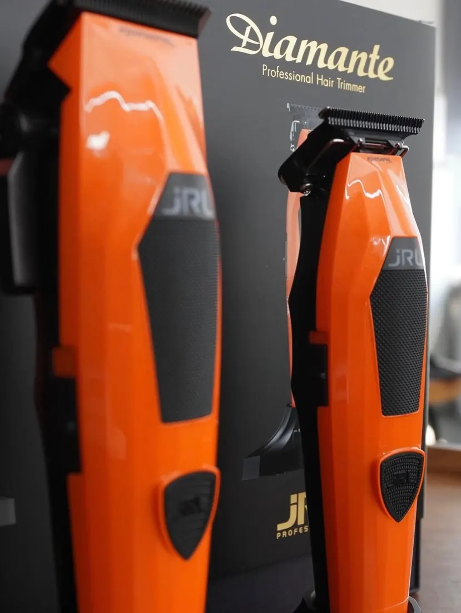
Kit JRL Diamante laranja
Acabamento premium e aquele visual que chama atenção na bancada.
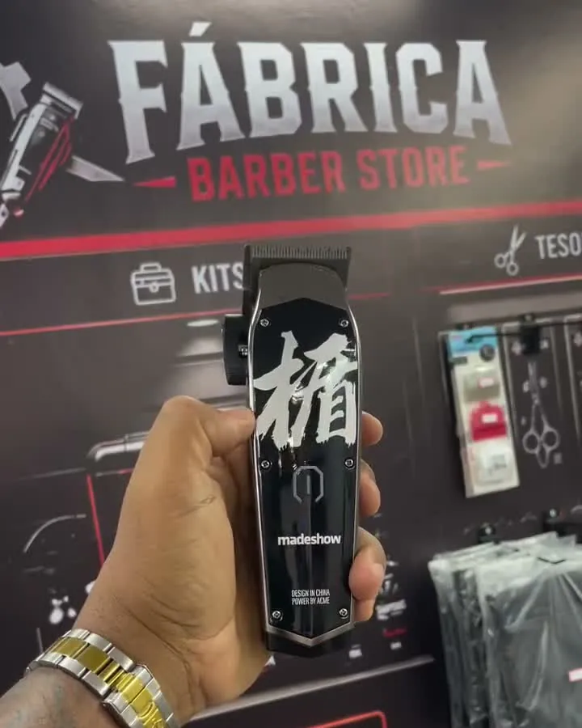
Madeshow M10+
Até 7.000 RPM, lâmina em aço inox e lâmina móvel de cerâmica com titânio.
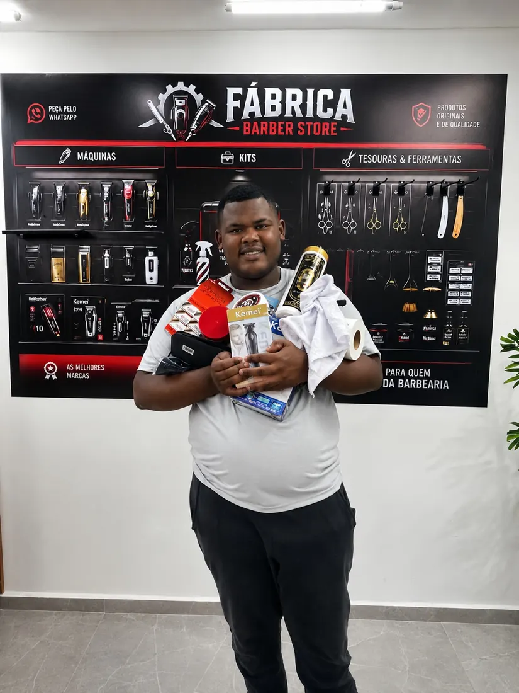
Kit Master Iniciante
Madeshow M10 e Kemei 2299, tesouras, navalhete, capa, gola, toalha, espanador e o resto pra sair do zero.